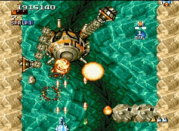
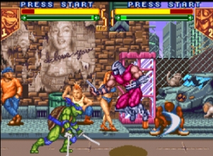

The Best Undiscovered Super Nintendo (SNES) Games
Usually, when you get a new-to-you console, you can usually find or
remember the major games to check out. But what happens when you need
something different to play? This is where the “Hidden Gems” come in.
Read More About My Criteria For Hidden Gems
See All The Hidden Gems Articles
This will be a bit of a work-in-progress. I may add to these as I go along and find new games.
If you have some recommendations to add, please do so in the comments section below.
Platformers
Obvious Choices:
Super Mario World, Yoshi’s Island, Super Mario All-Stars, Kirby Super Star, Kirby’s Dream Land 3,
Featured Game: DoReMi Fantasy
“DoReMi
Fantasy is a highly polished side-scrolling platformer. There are 7
worlds each with their own theme. In each world there’s a minimum of 6
levels followed by a boss. An overhead map allows you to backtrack. The
levels aren’t particularly long, but they possess plenty of detail,
quirky enemies, excellent backdrops, ace set pieces and satisfying
gameplay moments. Milon is a great character, full of charm and
animated brilliantly. The graphics are OUTSTANDING. The game has a real
sense of LIFE to it… you really have to see it in motion to fully
appreciate it. ”
RVG Fanatic’s Review of DoReMi Fantasy
Find DoReMi Fantasy on eBay
More Great Games:
Plok (eBay)
Magical Pop’n — (eBay)
Ganbare Daiku No Gensan — (eBay)
Go Go Ackman — (eBay)
Blackthorne (eBay)
Demon’s Crest — (eBay)
Joe & Mac (Caveman Ninja) — (eBay)
Tiny Toon Adventures: Buster Busts Loose — (eBay)
Umihara Kawase — (eBay)
Power Load Runner — (eBay)
Lode Runner Twin — (eBay)
Super Soukoban — (eBay)
Power Soukoban — (eBay)
Claymates (eBay)
Boogerman (eBay)
The Lion King — (eBay)
Bugs Bunny Rabbit Rampage — (eBay)
Cool Spot — (eBay)
Mickey Mania — (eBay)
Disney’s Magical Quest — (eBay)
Mickey and Donald — (eBay)
Mickey Tokyo Disneyland — (eBay)
Miracle Girls — (eBay)
Action/Adventure
Obvious Choices:
Prince of Persia, Super Ghouls ‘N Ghosts, Star Fox, Super Star Wars Series, Super Metroid, Mega Man
Featured Game: The Firemen / Ignition Factor
“It’s
6 PM on Christmas and a small fire in the Metrotech kitchen left
unattended has spread throughout the complex. With the building quickly
burning to a crisp and injured people trapped inside, it’s your job to
get in and neutralize the situation. There are six floors in all.
Thanks to the whole theme and atmosphere, it reminds me of Die Hard the
movie, except replace the terrorists with deadly flames, and the guns
with a water hose
Your partner carries an axe and helps you in eradicating fires and
other enemies, including bosses. He’ll carry out the victims as well.
Finding and rescuing victims are not necessary, per se, but finding
more means a better score and each time you save someone your health
will be restored by roughly 60% (if necessary)”
RVG Fanatic’s Review of The Firemen/Ignition Factor
Find Ignition Factor on eBay
More Great Games:
Metal Warriors — (eBay)
Phantom 2040 — (eBay)
Flashback: The Quest for Identity — (eBay)
MechWarrior 3050 — (eBay)
Majyuuou (King of Demons) — (eBay)
Cool World — (eBay)
Disney’s Aladdin — (eBay)
Rendering Ranger R2 — (eBay)
EVO - The Search for Eden — (eBay)
Nosferatu — (eBay)
Mazinger Z
Out of This World — (eBay)
Actraiser — (eBay)
Lost Vikings — (eBay)
Skyblazer
Legend of the Mystical Ninja — (eBay)
Equinox — (eBay)
Ghost Sweeper Mikami — (eBay)
Batman Returns — (eBay)
The Adventures of Batman & Robin — (eBay)
Spider-Man: Lethal Foes — (eBay)
Death and Return of Superman — (eBay)
X-Men: Mutant Apocalypse — (eBay)
Marvel Super Heroes: War of the Gems — (eBay)
Run-N-Gun Shooters
Obvious Choice:
Contra III: The Alien Wars
Feautred Game: Cybernator
” Cybernator is playing in the same league as Konami´s other action games like Super Castlevania and Contra 3,
but at the same time it’s very different because the emphasis of the
game is laid more on strategic thinking and accurate shooting than on
quick reflexes and fine tuned jumping skills. You are a pilot of a 100
ton battle mech equipped with a trusty shield and an upgradeable vulcan
cannon, that later on can be upgraded to an flamethrower, a lasercannon
or a missile launcher. The shield is an essential piece of equipment
because it will protect you from almost any enemy attack, even from
behind. This mean that you don’t have to avoid enemy gunfire, you can
just pick up the shield, and that´s lucky for you because your
battlemech is all other than fast, slim and movable….
The thing that makes Cybernator so special is the shield that makes
this game less hectic than other action games. Instead you must study
each enemy and learn their patterns so you know when to take down the
shield and attack and when not to. This handy shield doesn’t make the
game to easy if you think so, even if I would rather recommend games
like Contra 3 if you want a real challenge. Both Contra 3 and Super
Castlevania is better choices than Cybernator but when they are
finished then maybe you should start thinking about getting yourself a
copy of Cybernator ”
Nintendoland’s Review of Cybernator
Find Cybernator on eBay
More Great Games:
Kiki Kaikai (Pocky and Rocky) — (eBay)
Zombies Ate My Neighbors — (eBay)
Shmups
Obvious Choices: Jikkyou Oshaberi Parodius, Gokujou Parodius, Gradius III, R-Type III, Super Smash TV , Super R-Type, Darius Twin
Featured Game: Space Megaforce (aka Super Aleste)
“Back
in time when gamers weren’t convinced of the Super Famicom’s processing
speed - justified because of serious slowdown cases in almost every
shooter on the machine - along came Super Aleste, also known as Space
Megaforce in the US…
Perhaps Super Aleste’s best feature is it’s weapon system. Besides
the obligatory smart bombs you can pick up, there are eight different
upgradeable gadgets at your disposal. Also very welcome is the
possibility to change their attack mode at will; for example you can
switch between regular or less powerful homing missiles, or lock the
position of the Gradius-style multiples. The bottomline is that not
many other shoot ‘em ups provide a comparable amount of destructive
firepower, especially on a ‘mere’ 16-bit machine. It could do with some
better balancing, though - Super Aleste is a bit too easy on the
standard difficulty setting, because the enemy just can’t keep up with
the damage you’re capable of doing. Do what every serious shoot ‘em up
fan is supposed to do, and set the difficulty on Hard, at least. This
way you’ll prevent yourself watching the end sequence the first time
you play it… ”
SHMUPS! Review of Space Magaforce
Find Space Megaforce on eBay
More Great Games:
Strike Gunner STG — (eBay)
Pop ‘n’ Twinbee: Rainbow Bell Adventures — (eBay)
Pop ‘n’ Twinbee — (eBay)
Tekkaman Blade — (eBay)
Aerofighters/Sonic Wings — (eBay)
Blazeon — (eBay)
Cosmo Gang: The Video — (eBay)
Firepower 2000 — (eBay)
Super Earth Defense Force — (eBay)
Super Nova (Darius Force) — (eBay)
Thunder Spirits — (eBay)
U.N. Squadron — (eBay)
Wild Guns — (eBay)
Acrobat Mission — (eBay)
Bio Metal — (eBay)
Cotton — (eBay)
Spriggan Powered — (eBay)
Axelay — (eBay)
Fighting
Obvious Choices:
Street Fighter II, Street Fighter Alpha 2, Mortal Kombat, Killer Instinct, Primal Rage, Samurai Shodown
Featured Game: TMNT: Tournament Fighters
“TMNT
Tournament Fighters was inspired by the ’sparring match’? feature from
the TMNT: Turtles in Time brawler. Basically, you could practice your
moves in a 2-player sparring match with limited fighting options. That
proved to be a very popular feature and so it spawned the Tournament
Fighter series. The SNES version has 3 modes you can play the game in;
Story Mode, Tournament Mode or 2-Player.
The Story Mode is fun, though it only allows you to play as one of
the 4 Ninja Turtles. Still, adding a story gives the game a bit more
depth and I almost wish more fighters would do it the way Tournament
Fighters did. In Tournament Mode you can play as any of the characters,
including the villains, to win lots of cash.”
Forever Geek’s Review of TMNT Tournament Fighters
Find TMNT Tournement Fighters on eBay
More Great Games:
Kidou Senshi Gundam W: Endless Duel — (eBay)
Dragon Ball Z Super Butouden 2 — (eBay)
Tae Kwon Do — (eBay)
SD Hiryu no Ken (Galactic Defender) — (eBay)
Dragon Ball Z Hyper Dimension — (eBay)
King of Monsters — (eBay)
Beatemups/Hack-N-Slash
Obvious Choices:
Super Castlevania IV, Castlevania Dracula X, Final Fight, Teenage Mutant Ninja Turtles IV: Turtles in Time
Featured Game: Knights of the Round
“This
little-known game is a sentimental favorite of mine. It plays like a
classy Golden Axe with no monsters and better visuals. The beautiful
graphics feature majestic castles and picturesque medieval landscapes.
A lavishly orchestrated musical score fits the theme perfectly. You can
choose from one of three legendary characters, including King Author.
You’ll gradually increase your experience level as you battle knights,
barbarians, jesters, and magicians. And of course each stage ends with
the obligatory boss.
You’ll collect money and food that fall from enemies you slay. Actually it looks pretty funny when you kill a knight and a big salad falls out of him. Knights of the Round is a fine looking game, but it suffers from repetitive gameplay. You only have two attacks - a standard hack and a “mega crush” attack (which you’ll want to save for tight situations). There’s a guard move, but it’s practically useless. Hacking up endless bad guys can get monotonous, and there’s not much diversity between the three characters you can control.
By far the best feature is your ability to knock a knight off of his
horse and mount the horse yourself. It’s a cool but underused trick -
there are only 2 or 3 opportunities to do it in the whole game. The two
player simultaneous action is fun enough, but slowdown is rampant at
times. And while the music is excellent, the sound effects are horribly
muffled. Knights of the Round is no classic, but fighting fans should
take a look.”
The Video Game Critic’s Review of Knights of the Round
Find Knights of the Round on eBay
More Great Games:
Spider-Man & Venom: Maximum Carnage — (eBay)
The King of Dragons — (eBay)
Gegege No Kitarou — (eBay)
Shin Nekketsu Kouha Kunio-kun - Kunio Tachi No Banka — (eBay)
Shodai - Nekketsu Kouha Kunio-kun — (eBay)
Super Double Dragon — (eBay)
Legend — (eBay)
Battletoads & Double Dragon — (eBay)
Iron Commando — (eBay)
RPG
Obvious Choices:
Chrono Trigger, EarthBound, Final Fantasy II, Final Fantasy III, Final Fantasy Mystic Quest, Secret of Mana, Dragon Quest Series
Featured Game: Lufia II: Rise of the Sinistrals
“Lufia
2 is actually a prequel to the first Lufia game; the story of Lufia 2
takes place 100 years before the first game… Like its predecessor,
Lufia 2 uses a turn based battle system with rounds…
Puzzles are a very big part of Lufia 2. Each dungeon contains several puzzles. Some puzzles must be solved in order to complete the dungeon and open new rooms leading to the goal, but there are also a few puzzles which are optional and yield special items and armaments to those who solve them. Some of the puzzles are simple in design, such as hitting switches and levers, luring enemies to step on switches, and killing certain monsters, but there are also several very original and clever puzzles in Lufia 2. The puzzles are all very simple early in the game, but in later dungeons, some of the puzzles are very difficult….
All in all, Lufia 2 is an enjoyable game, and a nice classic 2-D
RPG. Fans of Lufia 1 would be the people who would enjoy Lufia 2 the
most. Although Lufia 2 is technically a prequel, the story is best
experienced by playing Lufia 1 first and Lufia 2 second. Lufia 1 left
several mysteries unsolved; Lufia 2 reveals the answers.”
RPGFan’s Review of Lufia II: Rise of the Sinistrals
Find Lufia II: Rise of the Sinistrals on eBay
More Great Games:
Lufia & The Fortress Of Doom — (eBay)
Live A Live — (eBay)
Romance of the Three Kingdoms 2 — (eBay)
Secret of Evermore — (eBay)
Wonder Project J — (eBay)
7th Saga — (eBay)
Bishoujo Senshi Sailor Moon: Another Story — (eBay)
Shadowrun (eBay)
Breath of Fire — (eBay)
Breath of Fire II — (eBay)
Inindo: Way of the Ninja — (eBay)
Romancing Sa-Ga 3 — (eBay)
Shin Megami Tensei — (eBay)
Arcana — (eBay)
Star Ocean — (eBay)
Tales of Phantasia — (eBay)
Dragon Ball Z Super Gokuden: Totsugeki-Hen — (eBay)
Wizardry V — (eBay)
Paladin’s Quest — (eBay)
Action RPG
Obvious Choices:
The Legend of Zelda: A Link to the Past, Super Mario RPG
Featured Game: Illusion of Gaia
“Gaia
looks like Zelda on the surface, but its gameplay is a bit more
action-oriented. Its relatively linear style of play seems to encourage
fighting over exploration and puzzle-solving, although the game somehow
manages to keep a good balance. The amount of enemies in each area is
always about right and they don’t respawn, so fighting never becomes
repetitive. Will’s powers of transformation really liven things up!
When you begin a dungeon, you’ll usually play for awhile as Will, but
eventually you’ll discover a Dark Space, in which you can transform
into the Dark Knight, Freedan, who is stronger than Will. Freedan makes
plowing through enemies even faster and easier.
Gaia has a unique level-up system in which you gain a level by
defeating all enemies in a given area. This is simple to do because you
can follow your monster radar to find enemies you’ve missed. There is
no monotonous level-building or searching for “heart containers” or
anything in that mold. ”
Flying Omelette’s Review of Illusion of Gaia
Find Illusion of Gaia on eBay
More Great Games:
Dragon View — (eBay)
Soul Blazer — (eBay)
Terranigma (eBay)
Twisted Tales of Spike McFang — (eBay)
Strategy RPG
Obvious Choices:
Fire Emblem Series, Super Famicom Wars (both Japan only)
Featured Game: Ogre Battle: March of the Black Queen
”
The story is not full RPG quality, but there’s enough in it to make you
want to care. In it, you build an army from a various mix of humans,
imps, and other assorted creatures, all with their own strengths and
weaknesses. You then put 10 units (of up to 5 characters each) on the
map and use them to liberate towns, and take out the Empire’s forces on
that particular map…
The complex structure of this game is what makes this a true SNES
classic. If at all possible, get the SNES version as it runs much
faster than the PS re-release. The infinite possibilites of what your
army can be made up of is half the fun. You have the troops you’re
given, basic at first, but cheap and eventually powerful. You also have
friends along the way who may command higher salaries but give results
sooner (like the two generals), or you can recruit lesser troops later
on to fill in your weaknesses. Taking them to battle in the game means
they all use up their turns, and whoever deals more damage that battle
“wins” the battle and pushes the army back some. Of course, one can
eradicate the opponent which is a certain win. You can’t allow the base
to be taken, or your main character to die. Much has been written about
what kind of manaGameent this game involves and what I’ve said barely
scratches the surface.”
StageSelect’s Review of Ogre Battle
Find Ogre Battle on eBay
More Great Games:
Bahamut Lagoon — (eBay)
Gamefire — (eBay)
King Arthur’s World — (eBay)
Metal Marines — (eBay)
Der Langrisser — (eBay)
Simulation Strategy
Obvious Choices:
SimCity, Populous
Featured Game: Aerobiz Supersonic
“The
goal [in Aerobiz is] to win the game is pretty simple on the surface of
things: become the #1 airline in 5 continents. Each turn in the game
equals to a financial quarter and the player gets to make decisions
such as where to negotiate to open hubs for new flight destinations,
how to tweak existing flight routes to strike a balance between profit
and consumer loyalty, and order the most cost-effective planes possible.
Wow, what a boring description. How the hell is this a good game? I
have no idea, but somehow Koei makes it work… If you have ever enjoyed
a game from Maxis’ popular Sims series, or are a statistics maniac, or
a turn based strategy game fan in general, try and track down Aerobiz
Supersonic for a spin. It’s well worth your time and a bit more
innovative than a lot of current games that are out..”
Find Aerobiz Supersonic on eBayMore Great Games:
Harvest Moon — (eBay)
SimEarth — (eBay)
Puzzle
Obvious Choices:
Tetris & Dr. Mario, Kirby’s Avalanche
Featured Game: Tetris Attack (aka Panel de Pon, Pokemon Puzzle Challenge)
This
game’s title is very misleading. It has not one single thing in common
with Tetris at all (Yoshi’s Panels or something would’ve been a better
name). Oh, all right, one thing: both games feature a lot of blocks.
And that’s where the similarities end. In Tetris Attack, a stack of
colorful blocks slowly scrolls up your screen. If it reaches the top,
you die, and oblivion will descend upon earth. Probably.
You can remove blocks by making lines of four or more of the same
color. To achieve this, you can “swap” two blocks around. I’ll try to
explain. You control a small cursor with which you can highlight any
two blocks that touch sideways. Press a button, and the two blocks your
cursor is on will change position (I know, it sounds mighty warped on
paper, but you’ll get the hang of it in a matter of seconds). And of
course, by making large combos and chain reactions, you will be able to
launch devastating attacks on your enemyies.”
Nintendoland’s Review of Tetris Attack
Find Tetris Attack on eBay
More Great Games:
Wario’s Woods — (eBay)
Mario and Wario — (eBay)
Wrecking Crew ‘98 — (eBay)
Araiguma Rascal: Racoon Rascal — (eBay)
Bakuto! Dochers — (eBay)
Keeper — (eBay)
Panic Bomber — (eBay)
Action Puzzler
Obvious Choices:
Super Bomberman
Featured Game: Otoboke Ninja Colossum
“Nothing
is quite as sweet as lurking about the screen, waiting for others to do
the dirty work. And when you find a dazed opponent, sending the chain
ball twisting and curving some twenty feet away… makes for great
enemies and Ooooh-I’ll-get-you-next-round! battles!
Otoboke lacks the finishing touches and isn’t nearly as customizable as the Bombermen games. There’s no option for CPU AI — the default is quite laughably horrible. There’s no tag team option. Thankfully the rest is status quo — pick between 2-4 players (from a character choice of four females), 1-5 wins and one of the any eight colosseums…
I like Spark World quite a bit, but it was a blatantly shameless clone. At least Otoboke tried to be a little different, and as such, is a more commendable effort.”
RVG Fanatic’s Review of Otoboke Ninja Colosseum
Find Otoboke Ninja Colossum on eBay
More Great Games:
Spark World — (eBay)
Bomberman B-Danman — (eBay)
Sanrio World Smash Ball — (eBay)
Pop N Smash — (eBay)
Ranma 1/2: Ougi Jaanken — (eBay)
Super Tekkyu Fight! — (eBay)
Sutte Hakkun — (eBay)
Sports/Racing/Flying
Obvious Choices:
Super Mario Kart, F-Zero, Pilotwings, Stunt Race FX, Madden, NBA Jam, Tecmo Super Bowl, etc
Featured Game: Rock ‘N Roll Racing
“Set
across six planets each with a whole host of tracks, Rock N Roll Racing
is good over-the-top racing fun. After selecting your racer of choice
players must battle against three other opponents, with the aim of
collecting enough points at the end of the season to qualify for the
next planet. Far from being a simple case of racing around the circuit,
tracks are often reminiscent of a battleground with both cars and
terrain capable of blowing an opponent into a different universe.
Cars come in four different types, starting with a sand buggy-type
contraption and working up to a full-on battle hovercraft. Each vehicle
can have numerous things added to it in order to help you through -
these include mines, missiles, nitros, better tires, and thicker
armour. But the real skill comes in being able to take on opponents
with as little as possible, as when you reach a new planet one of the
opponents will have a new car meaning you need to upgrade - and rest
assured these contraptions do not come cheap.”
GameStyle.net’s Review of Rock N Roll Racing
Find Rock N Roll Racing on eBay
More Great Games:
Battle Cross — (eBay)
Battle Racers — (eBay)
Super Mad Champ — (eBay)
Super Baseball 2020 — (eBay)
Astro Go! Go! — (eBay)
Super Dodgeball — (eBay)
Super Soccer — (eBay)
Super Tennis — (eBay)
Dream Basketball: Dunk and Hoop — (eBay)
Top Gear — (eBay)
SD F-1 Grand Prix — (eBay)
If you have any other hidden SNES gems to pass along, please feel free to share them in the comments section below.
38 Comments:
If you like Cybernator be sure to check out it’s massively better sequel Metal Warriors.
Man, back in the day, my mom was a force to be reckoned with when it came to Tetris Attack. Then again, she was amazing at pretty much every Tetris game that she ever played.
Agreed on everything, R’N'R racing was incredible! my brother and I would play that for days…
Thanks for this. While I had a mate who owned a SNES, he only really picked up the popular stuff, and I never owned one myself. This is one system’s library I have never really looked into that deeply for some reason. If only a perfect dreamcast SNES emulator came about (AKA one that doesn’t take six hours of noisy buffering to load all the titles). I say this, because I don’t enjoy PC emulation too much.
This is a great list. The only addition I’d make are the fantastic Battle Clash (that Super Scope 6 never really caught on), and Front Mission - Gun Hazard, which was Japan only, but has had a translation done for it. It’s like a Cybernator RPG, one my fave SNES titles.
Love the inclusion of games like Umihara Kawase and Ogre Battle, Terranigma, Spike McFang and TMNT: TF.
You also may want to include “King of Dragons” for Beat’em Up (I think it’s a step up above Capcom’s own Knights of the Round, but not as funny). I’m not sure if I want to include the “Rushing Beat” series (Brawl Bros, etc.); while fun, aren’t quite as polished.
What about Wanderers from Ys III? It was like the Zelda 2 of the Ys series, and a pretty good first-wave title.
“Faceball 3000″ and “Spectre”, while old ported titles, are always fun.
B.O.B. needs more credit in the run-n-gun category. At least put up Super Valis IV. (a faster-paced, watered down version of the Valis series — it should have been more Castelvania 3-esque)
Skyblazer needs its own page!
Macross: SDF Scramble Valkyrie could be put up here. It has a GBA translation to English.
-=PakoPako=-
Nice list. You should think about adding Sunset Riders
Awesome list! i luv R�n�r racing and river city ransom =)
Another favorite Puzzle Action game for snes, and possibly a hidden gem, is Q*bert 3.
The Ignition factor and the firemen are not the same game. the former was released in the US while the latter wasn’t. They’re both firefighting games though.
I was told they were, but Ignition Factor had some things taken out of it…
Ehhhm, you fogot to put DKC in the obvious choices for platformer.
And you should add Hagane it’s A great game.
I’m disappointed to see two of my favorites missing from this list.
The Ninja Warriors (Occasionally named “Ninja Warriors Again”) is a sadly oft-overlooked side-scrolling beat-em-up, featuring three characters who play radically differently. Although it’s a beat-em-up at its’ core, one interesting aspect is that it confines you to a plane like a platformer.
The wiki page is here, but it’s not very informative: http://en.wikipedia.org/wiki/Ninja_Warriors
Run Saber is also worth mentioning. It plays very similarly to the Strider games, and is a lot of fun as an action/platformer. It was actually put under the Strider banner on HG101: http://hg101.classicgaming.gamespy.com/strider/strider3.htm
Overall, though, this is an intruguing list- I’m glad to see Shadowrun and Lufia 2- a pair of my own favorite obscure SNES games- included on this list. Super Aleste is another excellent game that I only jsut recently discovered.
I should really try King Arthur’s World one of these days…
- HC
You only need to line up 3 in Tetris Attack, not 4. Doesn’t change the fact that it is perhaps the best puzzle game of all time, or at least pretty high up there.
Hey man, I just saw this list… wow, I had no idea how much my work has been highlighted here by you! I was directed to it today and I just want to tell you THANKS. I’ll have to remember to add you to my LINKS section next time I update my site. Thanks for the pub, it’s very much appreciated. DoReMi Fantasy is indeed SICK
-Steve
Well, you definitely deserved the links!
I was very impressed with your work — it’s hard to find such detailed writing on Super Famicom imports
another game missing from this list is Saturday Night Slammasters. One of the coolest wrestling games ever made.
An apparently *really* obscure one is MechWarrior. I had a lot of fun with it. Perhaps it’s rare, all I know is I loved it.
I would’ve really liked to have seen Robotrek somewhere on the RPG list, it was fantastic! Robotrek paved the way for the custom robot battle games we have today, like Chibi Robo.
Put “King’s Arhthur World” in strategy, it’s a horizontal-scrolling strategy game, I played it a lot when I was 10, it was one of my favourite game =)
i didn’t see zombies ate my neighbors anywhere on this page! dang…what has the world come to. what about earthworm jim? might and magic III? c’mon, guy. get with it!
furthermore, i have a huge collection of snes hidden gems that i’m thinking of selling off. do you know where i could do that?
great post, although this article a sequel, since you still missed on a lot of gems. as far as classics go
PS1 had the most
SNES had the second most amount
NES had the third most (especially notable because it was home to the birth of many franchises)
King Arthur’s world is missing! amazing title. (Puzzle/Strategy)
Realm is also a phenomenal side stroller action, reminded me of gunstar heroes.
Lawmmower Man was unexpectedly good run & gun game, and featured SuperFX mini levels in the VR missions.
sorry i noticed you put in king arthur’s world, my mistake, good to see the game getting some shine after the snes era was over. and i meant lawnmower not whatever i put there.
Let’s not forget shadowrun.
So how do you fit a game like Uni-Racers into all of this?
I’d put it into Sports/Racing/Flying, but most SNES fans actually know about Uniracers
Lufia 2 is the greatest game I have ever played in my life! Tops chrono trigger imo.
I think Jurassic Park was an excellent game that deserved to be somewhere on this list. It was extremely well made by the OCEAN greats with great graphics, superb music, and action/adventure/first-person packed into one! The first-person parts are decent for a snes game. The story of this JP game was based on the book which explains
the unusual structure of the game as most would assume it to follow the flow of the film. By far my favorite aspect of this gem is the lack of a save or password option, as it forced me to draw up detailed maps of the interior portions of the game in order to come back to it and beat it in one quick(3 hours or so)sitting. Definitely worth a look for any snes fan!
You are missing one of the BEST undiscovered gems! for any system E.V.O. Search For Eden!
It’s one of the best and deepest SNES games, original and addictive!!
http://www.gamespot.com/snes/action/46okutoshimonogatari/review.html?om_act=convert&om_clk=tabs&tag=tabs;reviews
you forgot to mention that R’N’R racing had 5 or 6 of the greatest rock’n'roll songs ever!!!…they include black sabbath´s paranoid and deep purple´s highway star…played amazingly!!!!…and the fun/action factor was incredibly great!!!
Super nintendo is my best console by far!!!!
thanks to nintendo for giving us great hours of big, genuine, unique amusement…
I was trying to guess what the hidden gem RPG would be… I would have guessed Robotrek. When I saw it was Lufia II, I thought “I forgot Lufia isn’t so popular.”
Lufia II is THE best RPG on the system (and yes, that IS saying alot).
Ah TMNT Tournament Fighters! Man you’re brining it back. I remember when Blockbuster had a tournament for that game. I didn’t get far into the tournament but it was definitely fun!
Kirbys Dream Course.
Awesomest game evar.
Forgot “Biker Mice from Mars” Try it. Sure to replace Rock ‘n’ Roll Racing tenfold!
mega man soccer was another ‘undiscovered’ gem in the sports aisle.
final fantasy V was another classic rpg that i think was missed
looney tunes basketball was an ok 2 player game
i didnt see mario RPG on there but i didnt really look to hard though
For a simulation strategy game I’m going to require you add Sim Ant up here, it’s an amazing game, and almost always overlooked.
I forgot to mention above, perhaps you don’t mind not adding this but I think it should be up here for the sports category. Super Punch-out. It may seem like it doesn’t belong, but I think it should still have a place on the obvious choice categories.
Not trying to be a jerk, but I was looking to find all these games for my own collection and found it hard to locate some because of the names you used, these names were much easier to find.
Action Adventure Category:
Spider-man: Lethal Foes, the real name of the game is “The Amazing Spider-man Lethal Foes”.
Platformers Category:
Power Load Runner is actually “Power Lode Runner”.
Mickey Tokyo Disneyland, is better known as “Mickey no Tokyo Disneyland Daibouken”.
Mickey and Donald is better known as “Mickey to Donald: Magical Adventure”.
Disney’s Magical Quest, is better known as “The Magical Quest Starring Mickey Mouse”.
Shumps Category:
Cotton is better known as “Marchen Adventure Cotton 100%”.
Tekkaman Blade is better known as “Uchuu no Kishi - Tekkaman Blade”.
Sports Category:
Astro Go! Go! is better known as “Uchuu Race - Astro Go! Go!”
I also can’t find “Ghost Sweeper Mikami” anywhere, any ideas on a different name I could search with?
Post a Comment
Links to This Post:
[…] See Also: The Cheapest SNES Games Worth Your Time & The Best Undiscovered SNES Games […]
[…] de Hidden Gems Collection, seleccionan juegos injustamente olvidados de una determinada consola. Ahora le ha tocado el turno a la SuperNintendo y el listado no tiene desperdicio. Ya he descubierto un buen puñado de grandes clásicos ocultos, […]